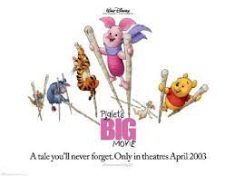

Winnie the Pooh (or Pooh for short) is the title character of the series of the same name. He is an anthropomorphic, honey-loving teddy bear belonging to Christopher Robin that first appeared in Disney's 1966 short Winnie the Pooh and the Honey Tree.
"Winnie-the-Pooh," as he was originally called, first appeared in a story written by A.A. Milne, who based the characters off his young owner Christopher Robin Milne and the boy's stuffed animals. The original toy bear was named after Winnie (short for "Winnipeg"), a bear that had been adopted as a cub by a Canadian soldier during World War I, who was a popular attraction at the London Zoo. The stories were popular in the Disney household, motivating Walt to start production on a series of featurettes starring the honey-obsessed bear and his collection of friends.
Pooh is described as being "a bear of very little brain." He is generally kind and friendly towards everyone and has a demeanor that is childlike and innocent. Because of his limited intelligence, however, Pooh is extremely naive. Absent-minded and simple, he tends to process things at a slower pace than his friends, to the point of seeming disoriented. Pooh's sluggish nature also makes him somewhat passive in most situations.
Pooh is an anthropomorphic teddy bear. He is short, has yellow fur, and a round belly. He has black dot eyes, a black nose, a short snout, and small round ears. There is also stitching on his belly and bottom, which occasionally rips open. He only wears a small red short-sleeved shirt, in which his belly hangs out of.
At the start of the film, the narrator declares it to be another story about Winnie the Pooh until a frustrated Tigger interrupts. Having grown tired of every story revolving around Pooh, Tigger suggests that the new book should focus on him, to which the narrator obliges. When Pooh is first introduced, he is busy gathering enough honey to last the winter, until Tigger bursts in, asking to go bouncing. Unfortunately, Pooh was too busy.
During a plan to obtain honey from the bees, Piglet makes several attempts to join his friends eventually saving them from the bees after their plan failed. Pooh gives credit only to Tigger, Rabbit, and Eeyore unaware of Piglet's actions. Pooh and friends learn Piglet is missing and to them for unknown reasons. Pooh uses Piglet's scrapbook to track him down eventually realizing how big a hero Piglet truly is. Soon enough the book is accidentally dismantled by Rabbit and Tigger. The friends track most pages, but the cover and a few more pages are dangling over a log in a dangerous pose. Pooh, not caring about the danger, goes after it anyway and nearly falls to his death. At the last minute, he is rescued by Piglet. The group is safe and the throw an appreciation party for their heroic friend.
A mysterious intruder has entered the Hundred Acre Woods and Rabbit knows there's only one thing it could be a Heffalump. To protect the woods, Pooh and his pals gather all the furniture, tools and honey they can find. The expedition begins the next morning. Piglet uses jellybeans to remember the way home but is eaten by Pooh the minute they touch the ground. Pooh and Piglet are lost and separated from the group.
It is a regular morning in the Hundred Acre Woods and to Pooh seems like a great day until he finds himself out of honey. He goes out to find some in during which he runs from bees and screws up some of the text and eventually runs into a depressed Eeyore. Pooh's friend has yet again lost his tail and to learn what to do, Pooh and his friend go to Owl. The first thing to do is issue a reward for the finding of the tail, says the wise bird. The session is briefly interrupted when Pooh strongly believes Owl's caught a cold. Shortly after, Christopher Robin sets a contest for the finding of the tail. The winner gets a pot of honey. Pooh is then given the task to alert the woods that there is a very important thing to do. While he's out, Pooh runs into Tigger who attacks the balloon Pooh is holding. The balloon is attracted to the fur of Tigger which frightens him. Pooh claims the balloon wants to stay with Tigger who then suggests having him become a sidekick until he begins to worry about something wrong happening to him.
Pooh plays the central role in the live-action film wherein a now adult Christopher Robin lives in London with his wife and daughter. After reuniting during a particularly low point of Christopher's life, Pooh fears that his friend has lost his way. Back in the Hundred Acre Woods, Pooh bands together Tigger, Piglet, and Eeyore to travel to London in order to save Christopher Robin. Jim Cummings is the only returning actor of the animated voice cast, reprising his role as Pooh (and Tigger). Physically, Pooh has aged significantly—he has lost some of the hues in his color and has notable wears and tears across his plush figure.
In the 2015 rendition of World of Color, Pooh made a cameo appearance during the opening sequence, in honor of Walt Disney, as well as Disneyland Forever.
For meet-and-greets, Pooh is often found in the Magic Kingdom, Epcot and Disney's Animal Kingdom with Tigger.
In the Magic Kingdom's Once Upon a Time, Pooh stars in his own segment where he performs "Rumbly in My Tumbly" (with additional clips from "Everything is Honey"). He is later seen being harassed by the combined menace of Heffalumps, Woozles, and Pink Elephants.
Pooh is the star of his own dark ride titled Pooh's Hunny Hunt, located in most Tokyo Disneyland. He also appears in the park's version of Once Upon a Time.
In Disneyland Paris, Pooh stars in Winnie the Pooh and Friends, too!. In the same park, Pooh took part in Disney Magic on Parade, on his own float.